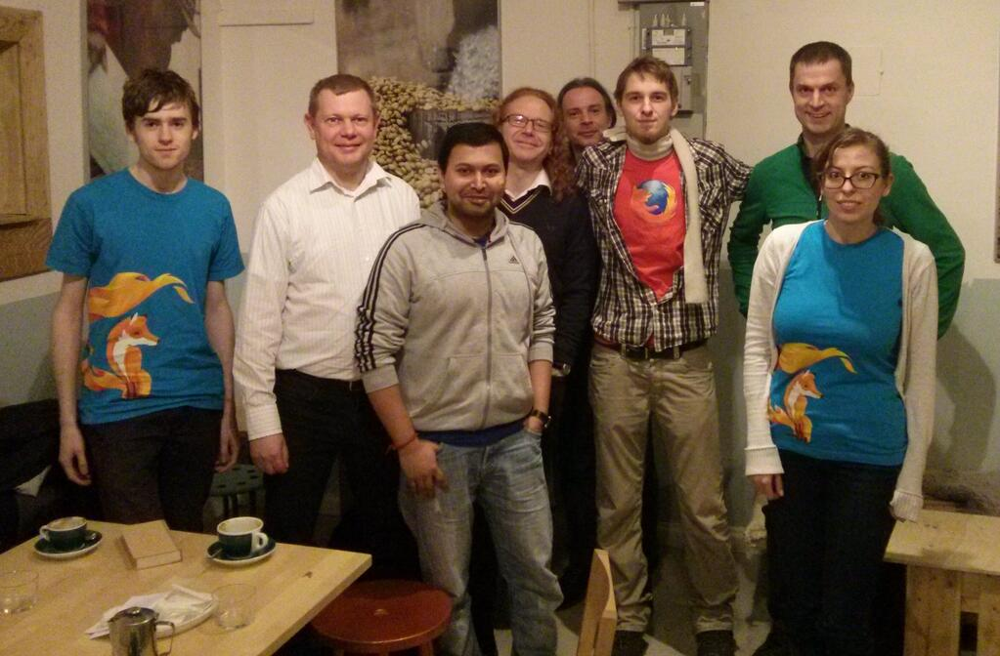
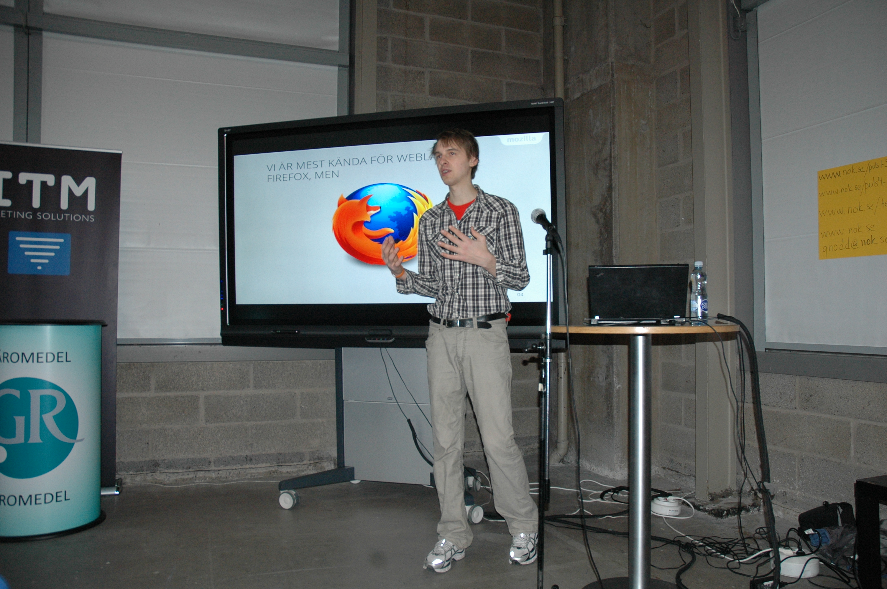
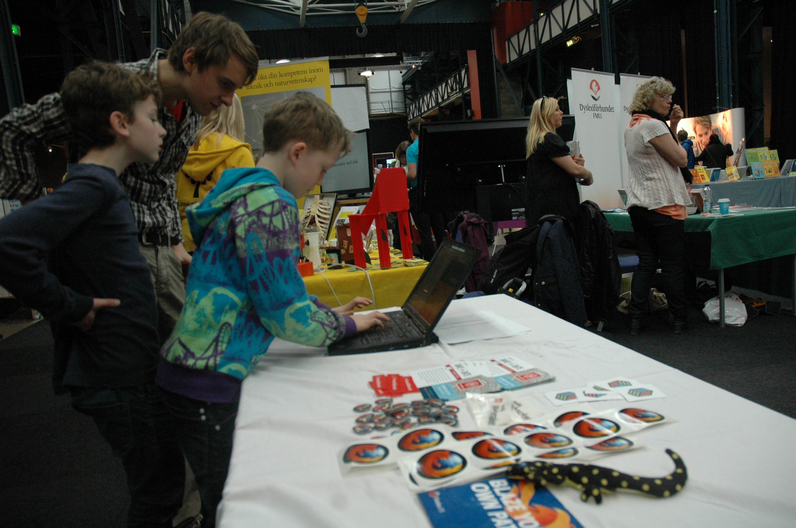
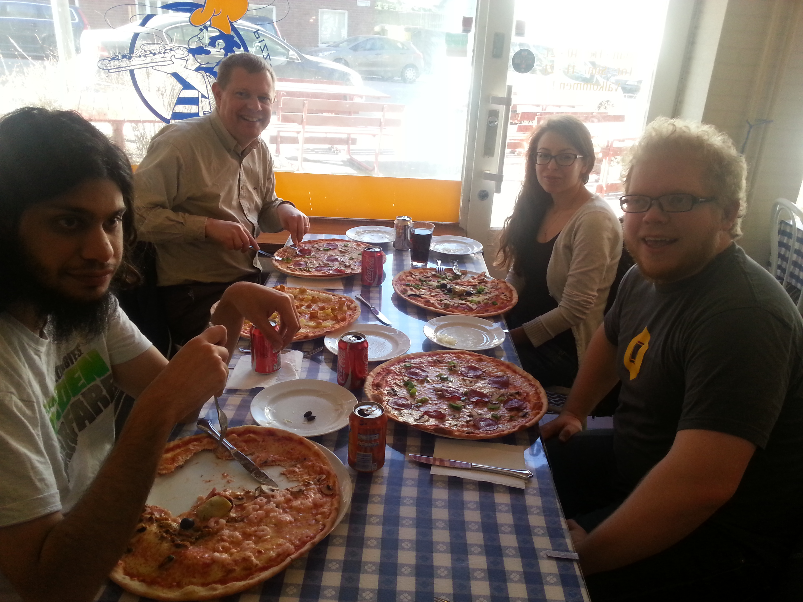

Oliver Propst
a global community of people who believe that openness, innovation, and opportunity are key to the continued health of the Internet.
A non-for profit foundation with the purpose of a Internet built by open technology.
The point of the redesign is to adapt the design to how modern users engage with the web”, Mozilla VP for Firefox, Johnathan Nightingale
Firefox 29 is proof that Mozilla actually cares about design
venturebeat.com
The New Firefox Is Fantastic
   